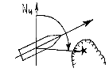
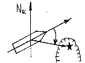

| 51. Този ъгъл наричаме:  |
|
истински курсови ъгъл курсови ъгъл десен борд истински курс истински пеленг |
| 52. Този ъгъл наричаме:  |
|
компасен пеленг компасен курсови пеленг курсови ъгъл ляв борд курсови ъгъл десен борд |
| 53. Истинския пеленг (ИП) е равен: |
|
ИП = КЪ - ΔΚ ИП = ИК - ΔΚ ИП = КП + ( ± ΔΚ ) ИП = ОКП ± ΔК |
| 54. Компасния курс е равен (КК): |
|
КК = МК- ( ± δ ) КК = ИК - d КК = ИК + d КК = КЪ + КП |
| 55. Далечината на видимост на фаровете върху морските карти е: |
|
изчислена при височина на окото на наблюдателя 2 метра изчислена при височина на морското ниво изчислена при височина на окото на наблюдателя 5 метра изчислена при височина на окото на наблюдателя 24 фута |
| 56. Далечината на видимост по тази формула се получава в: |
|
метри далечина на видимост километри далечина на видимост морски мили далечина на видимост кабелти далечина на видимост |
| 57. Основната единица за измерване на разстояния на море е: |
|
километър метър морска миля кабелт |
| 58. Морската миля е равна на: |
|
1852 метра 185 метра 100 метра 1/360 от дължината на екватора |
| 59. Един кабелт е равен на: |
|
1852 метра 285 метра 185 метра 100 ярда |
| 60. Кабелтът е единица за измерване на: |
|
разстояния дълбочини височини ъгли върху извити повърхности |